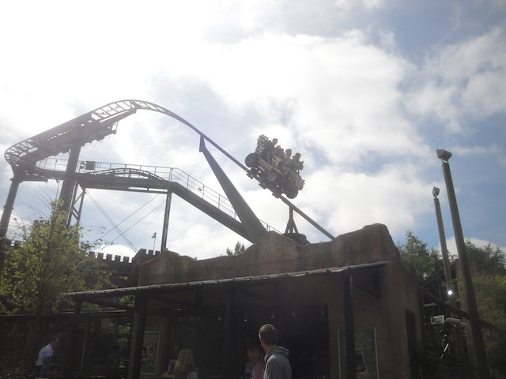
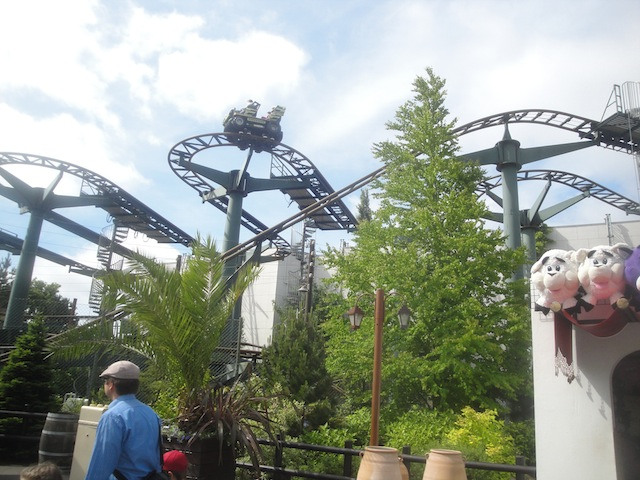
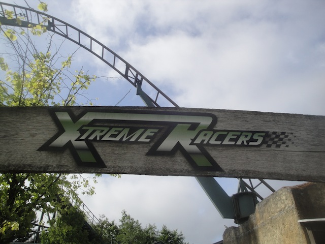

| |
X-treme Racers Review

We're here at Legoland Billund where we'll be reveiwing X-treme Racers, the parks Wild Mouse. This isn't just any old Wild Mouse. This is X-TREME RACERS!!! IT'S TOTALLY XTREME!!! XTREME WILD MOUSE IS BEST WILD MOUSE!!! YEAH!!! After getting in the seats and pulling down the lap bar, you go up the lifthill. Up, up, and up you go. The view isn't mch special, but look on the bright side. LEGOS!!!! XTREME LEGOS!!! We reach the top of the lift hill. Turn to the left, and then we see it. The big drop. Yep, this is one of the Wild Mouse models that has the big drop at the beginning. Yeah, Its fun. WEE!!!!!! EXTREME!!! And then we rise back up to the top. Yeah, that was fun. I wish other Wild Mice had this big first drop. We then hit a set of brakes, and now the Wild Mouse part is about to begin. And yeah. Its kind of slow during these turns. I mean, don't get me wrong, there are still laterals here, they're just not quite as strong as on the other Wild Mouse Coasters. The turns start to get faster and by the last set of turns, we're about on par with the other Wild Mice. After this, we then go through a big sweeping turn and then go through a small dip. Its not too amazing, but it is a fun little dip that makes us squeal with joy. We then hit some brakes, go around another turn and go through another dip. Yeah, you can sort of see a pattern within this type of ride. We then head into some brakes, these slow us down as we meander through a few more turns until we finally head straight into the final brake run. Yeah, its one of the Big Drop Wild Mouse models, which are always fun. They may not be the biggest or craziest coasters out there, or even the craziest Wild Mouse, but for a park like Legoland, it is an absolutely perfect fit for this park. Definetly make sure to give it a ride. You will have fun.
6/10
Location: Legoland Billund
Opened: 2002
Built by: Mack
Last Ridden: June 18, 2014
I have ridden this exact same ride at the following parks.
Kings Dominion
Knotts Berry Farm
Legoland California
X-treme Racers Photos


Home
|